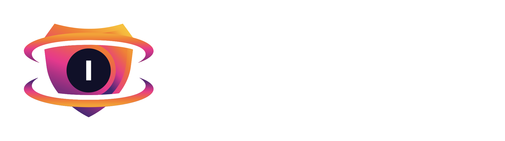
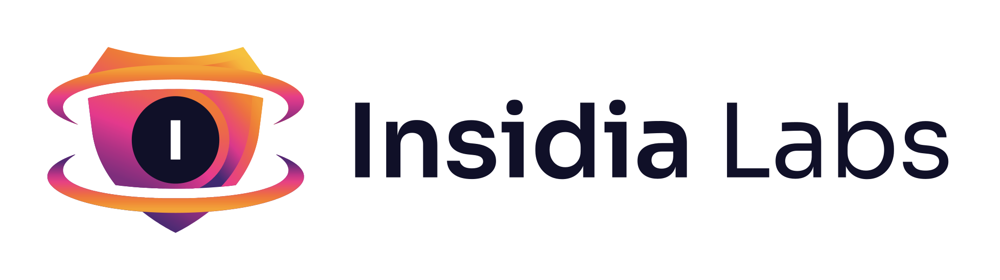

Open-source security testing for AI apps, agents, and the web apps and APIs around them.
$ insidia scan --policy L2 scope localhost:8080, localhost:3000 AI layer garak · promptfoo · PyRIT · DeepTeam App layer ZAP · Nuclei · Dalfox · Trivy Insidia indirect injection · RAG bleed · BOLA ✓ 31 of 38 controls passed ● 3 high · 1 chain: prompt injection → SQLi report .insidia/runs/latest/report.html